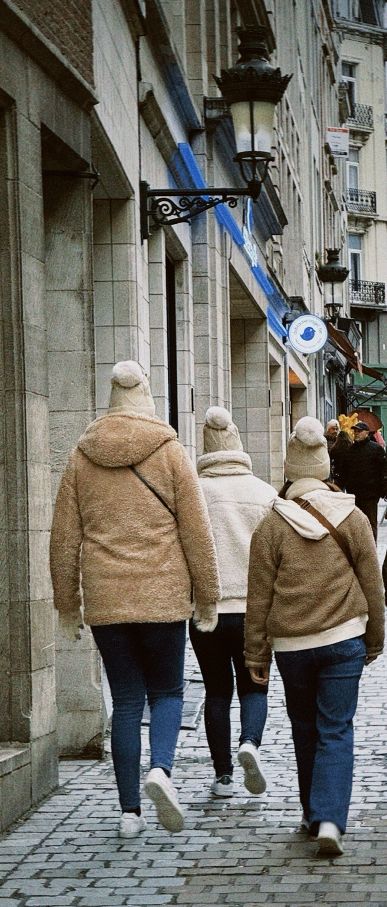

Walking Through Brussels
Three people walking along a cobblestone street in Brussels, Belgium, beside historic buildings and ornate street lamps.

Three people walking along a cobblestone street in Brussels, Belgium, beside historic buildings and ornate street lamps.